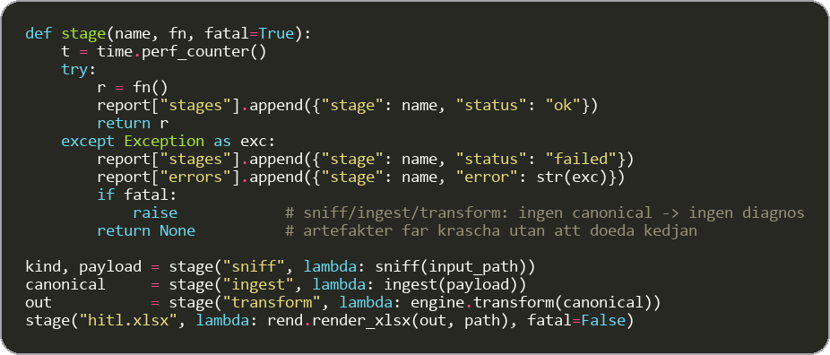
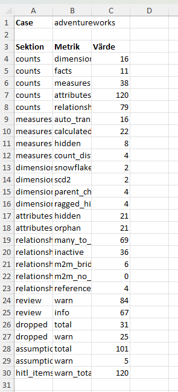
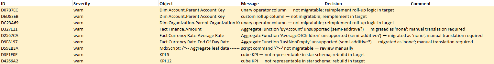
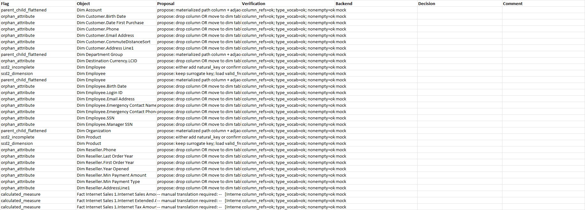
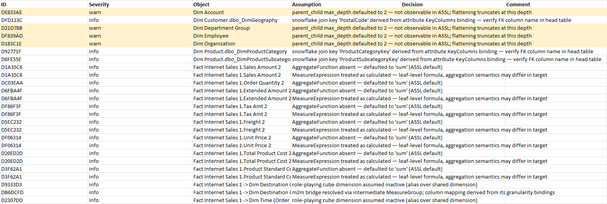
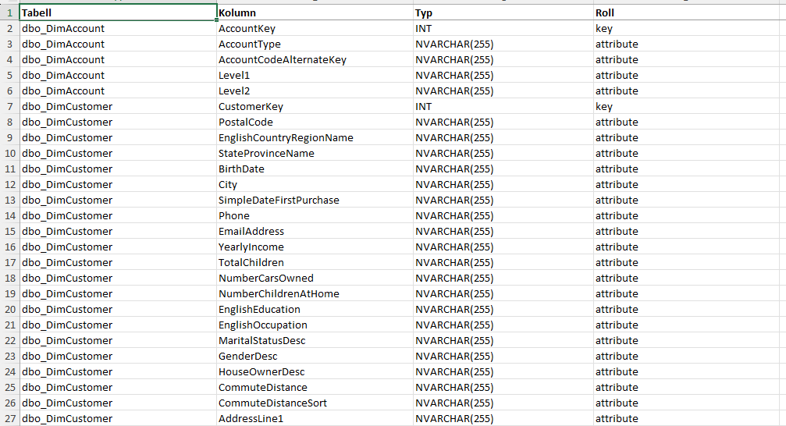
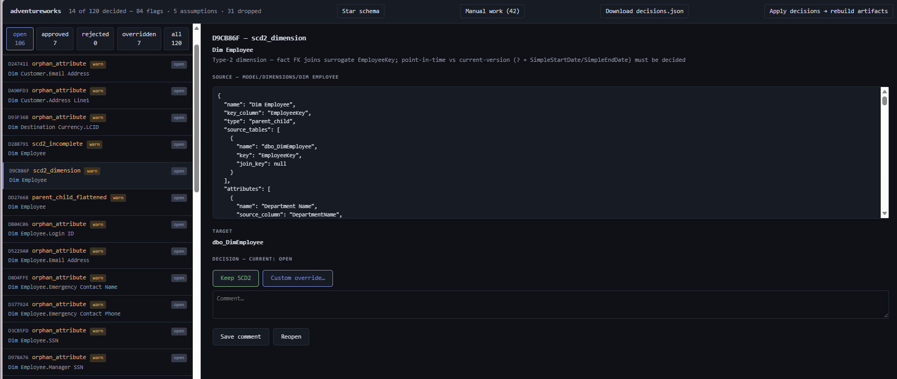
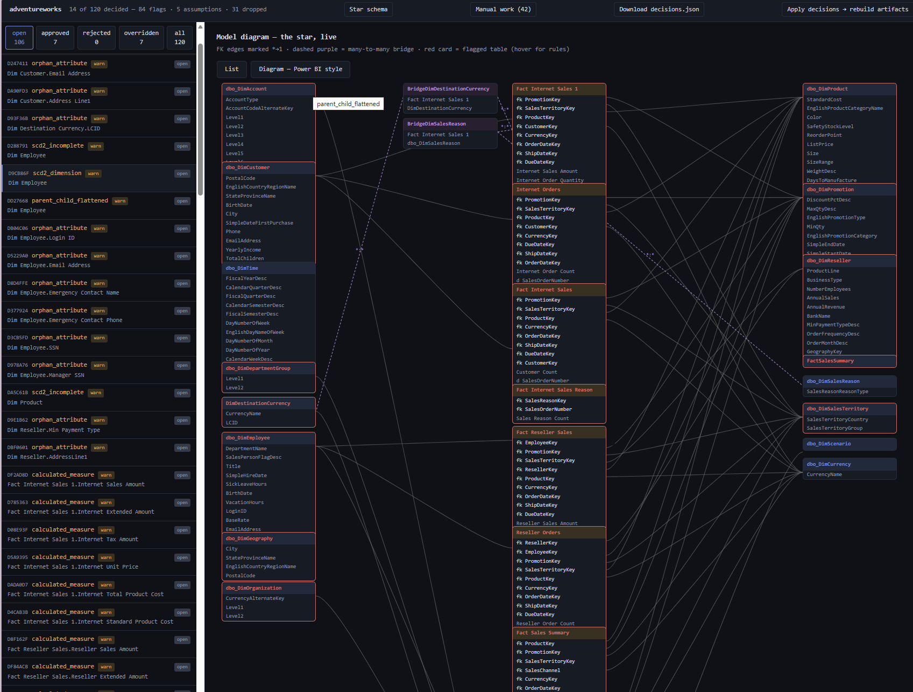
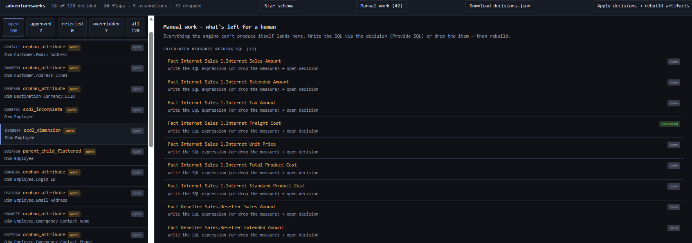

The problem
Migrating a legacy SSAS cube to a modern relational model is weeks of a senior consultant's time: untangling MDX measures, mapping role-playing dimensions, discovering the KPIs, perspectives and security roles nobody documented. Before anyone can even price the migration, somebody has to spend days just finding out what's in the cube.
CubeTriage answers the question every engagement starts with — how much work is this cube, really? — in seconds, from a single exported file. No cube data is read, only metadata; credentials in the file are masked before parsing, and the whole run can execute offline inside the customer's own network.
How it works
- Sniff — detects the input format: Tabular
.bim/TMSL, a scripted Multidimensional database (.xmla), or an SSDT project folder/.zip(.cube+.dimfiles are merged automatically) - Sanitize — passwords, connection strings and tokens are masked in the raw text before parsing; the scrub count is reported in the run log
- Ingest — normalizes Tabular or Multidimensional metadata into a single canonical model. Constructs the engine sees but cannot migrate are recorded in a dropped channel — never ignored silently
- Transform — proposes the target star schema: facts, conformed dimensions, bridge tables, physical types. Every inference lands in an assumptions channel; every trap becomes a severity-graded review flag
- Render — emits SQL DDL with real types, a markdown report, an annotated trap diagram, and an Excel workbook where each uncertainty is a row with a decision column
- Decide — every warn flag becomes a numbered decision in
decisions.json, stable across re-runs. A local web UI lets the reviewer click each flag straight through to its canonical source slice and its target table — approve, reject or override. Each accepted decision mutates the model and regenerates the migration — the review list isn't a report about the work, it is the work - Load & validate — the automatable part of the migration itself: generated INSERT SQL (snowflake JOINs, bridge loads) plus a paired validation harness — row counts, additive-measure checksums, foreign-key orphan checks — so generated SQL is always shipped with its own proof
- Proposals (opt-in) — a backend interface can suggest resolutions for each flag. Code verifiers check every suggestion against the model; the AI proposes, code verifies, a human decides

Result on real cubes — validated on both formats
Microsoft's own reference models — built to demonstrate enterprise SSAS features — through the pipeline in seconds. Multidimensional (Adventure Works 2019 Enterprise Edition, ASSL):
- 16 dimensions, 11 measure groups, 79 relationships, 38 measures — mapped automatically
- 22 calculated measures written in MDX — identified for manual translation, not ignored
- 29 role-playing relationships, 4 parent-child hierarchies, 4 reference dimensions, 6 many-to-many bridge relationships
- 31 constructs that cannot migrate (KPIs, actions, perspectives, translations, semi-additive measures) — reported, not lost
- 101 assumptions the engine had to make — each one documented
- 120 human-review items — the workbook is the work order
All eleven artifacts — schema, load SQL, validation SQL, workbook, diagram, decisions — from one file in about a second. The slowest steps are the Excel render and the diagram, not the analysis.
Tabular (Microsoft's AdventureWorks
Internet Sales .bim, compatibility level 1400): with no
Dim*/Fact* naming convention to lean on, the engine classified every
table purely from the relationship graph — 4 dimensions (Customer+Geography,
Date, Product+Subcategory+Category, Employee) and 2 facts, with the
three-level snowflake chain folded and an RLS role caught in the dropped channel.

The deliverable — a human-review workbook
Every uncertainty lands as a row with an empty decision column. The consultant doesn't untangle the cube — they review a numbered list of concrete decisions.





The review loop — where reviewing is migrating
The same decisions.json drives a local, zero-dependency web UI
running entirely offline. Click a flag and see where the problem actually lives: the
canonical source slice on top, the star-schema target below. The buttons say the
outcome, not the process — Keep column, Drop column, Provide SQL — and each
accepted decision is written into the model itself; one click regenerates every
artifact with it applied. The queue emptying isn't paperwork finishing — it's the
migration being completed, decision by decision.
The workbook stays as the exportable record for archiving and sign-off.
Try the review loop live — the same UI running on the real Adventure Works output above: all 120 decisions are clickable, provenance slices included. Decide, rebuild, watch the schema change. Everything runs in your browser — nothing is uploaded, and no engine code is shipped.



Now building — follow along
The honest state of the project — verified on real cubes, extended piece by piece. Everything below is designed the same way: what can be automated is, what can't is reported instead of fabricated.
- Done: decisions.json + apply loop — approved overrides mutate the model and every artifact regenerates (~1 s)
- Done: verified proposals are acceptable — an AI suggestion that survives code verification and reduces to a canonical diff gets an Apply button; everything else stays advice
- Done: load SQL + validation harness — 29 INSERTs with every source table matched at full column signature, and 101 paired checks generated from metadata alone
- Done: reviewer-tested UI — outcome verbs per flag, severity badges and priority, a Power BI-style live model diagram, Provide SQL as a first-class decision, and a Manual work view that counts the honest backlog
- Next: the validation runner itself — executes the paired checks against a live source/target inside the customer's perimeter (pyodbc, opt-in)
- Next: byte-level provenance — click a flag and land on the exact element in the exported source file, not just the canonical slice
- Next: container packaging — the whole pipeline as one runnable image
Why not the existing approach?
The status quo is a senior consultant with SSMS, a spreadsheet and six weeks. CubeTriage inverts that: the deterministic engine does the inventory — same input, same output, every time — and produces an auditable artefact instead of a verbal estimate. "Six weeks of untangling" becomes "120 concrete decisions". The AI layer is deliberately boxed in: it may propose resolutions to flagged items, but it can never modify the source model, and code verifiers check every proposal before a human sees it.
Regression is anchored in 18 synthetic fixture cubes engineered to carry every trap class — plus this real one. When a construct can't be migrated, the report says so.
Design choices
Provenance is structural: observed facts, inferred values, dropped constructs and AI-generated proposals are four separate channels — a reviewer can always tell what the engine knows from what it guesses. The engine is deterministic and offline-capable: no network calls, no telemetry, designed to run as a container inside a customer's perimeter so cube metadata never leaves their environment.
The code is private (commercial prototype), but the project deck is here: English PDF — and a how-to-use guide: quickstart PDF. Stack: Python · SSAS/OLAP (Tabular TMSL + Multidimensional ASSL) · openpyxl · matplotlib · LLM proposals behind a mockable backend interface.